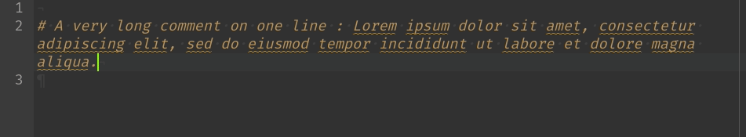

R Tips & Tricks
Julien Diot
Last update: 2024/02/21
Disclaimer
The R Tips and Tricks presented here are just what I use, and I don’t guarantee that this is the best way to do it. Moreover, new features are developed every days some stuff presented here might be outdated in the future. If you have any comments or suggestions, feel free to contact me: juliendiot@ut-biomet.org or post an issue on GitHub.
1 R-Studio configuration
My favourite IDE is R-Studio Desktop. It is free and open-source and provides a lot of powerful features.
This section presents interesting R-Studio settings and my current setup.
To setup R-Studio go to:
Tools -> Global Options....
Documentation for these settings is available here. It might not be up to date, but most of the settings are presented.
Some useful R-Studio settings are not activated by default, and I think it’s worth taking some time to check these settings.
1.1 Pane layout and appearance
Tools -> Global Options... -> Pane layout
To have more space for the editor, we can move the console on the top right corner and move the “Environment pane” to the bottom right.
Indeed, the panes on the bottom left do not need to be continuously displayed.

As you can see, I prefer dark theme because it’s more pleasant for my eyes. “Idle Fingers” is used on the image above. However, several other themes are available, some a light other are black.
It is also possible to create your own custom themes as explain in this R-Studio blog’s article
I also use the font “Fira code”, this font provide programming ligatures:


1.2 General settings

It is essential to not restore or save your workspace at startup or end of the R session. By this way, you will always start R-Studio in a fresh and clean environment. Because you have saved your script, you can regenerate the situation by running it. This is much better for the reproducibility of your work.
1.3 Code settings
Tools -> Global Options... -> Code
I present here R-Studio code settings. The highlighted lines are those I find interesting.
1.3.1 Editing

- Insert matching parens/quotes: When typing a paren, quote, or brace automatically insert a matching one and position the cursor between them.
- Auto-indent code after paste: Automatically execute a Reindent on blocks of R code pasted into the editor.
- Vertically align arguments in auto-indent: Preserve the current indentation level for function arguments split across multiple lines.
- Enable code snippets: see the corresponding section.
1.3.2 Display

- Highlight selected word: Add a background highlight effect to all instances of the currently selected word within the document. (Useful to find some variables in the code)
- Show line numbers: Show or hide line numbers within the left margin. (Useful for debugging)
- Show margin: Display a margin guide on the right-hand side of the source editor at the specified column. (The “good practices” require to have line smaller than 80 characters)
- Show whitespace characters: Display glyphs indicating where whitespace characters (tab, newline, etc.) are located in source documents. (Useful to detect “double spaces” and tabulation)
- Highlight R function calls: Highlight R functions. (Better distinction between functions and other R objects)
- Rainbow Parentheses: Being able to color your parentheses (and brackets and braces) based on the level of nesting. See here
1.3.3 Saving
- Ensure that source files end with a new line: I It’s a good practice to end the coding files with a new line.
- Strip trailing horizontal whitespaces when saving: Remove whitespaces from blank line:

Ctrl +
S- Auto-save: New feature of R-Studio 1.3
1.3.4 Completion

Completion help to write functions name and their parameters just by
taping the first letters and the tab key:

tab for automatic
completion1.3.5 Diagnostics

- Show diagnostics for R: Check to display alert messages in the margin of the editor when R code appears incorrect.

1.4 Spellchecking

1.5 Export your configuration
From R-Studio 1.3, the configuration is saved at
~/.config/rstudio for Linux/MacOS users and at
AppData/Roaming/RStudio on Windows. It is then easy to save
and retrieve your configuration. This folder contains:
- The R-Studio settings:
rstudio-pref.json - The snippets
- The personal dictionary
- The personal keyboard shortcuts definitions
2 .Rprofile
file
The .Rprofile file can be used to customize the
environment at the startup of R. It should be placed in the HOME
directory, or inside a folder of an R-project. (In this case, the one
inside the project take precedence over the other).
When R starts, it automatically sources the .Rprofile
file. So it can be used to set up some R options like:
options(max.print = 200) to reduce the number of printed
lines or options("scipen" = 999) to disabled the scientific
notation.
There are also two particular functions: .First( ) which
will be run at the start of the R session and .Last( ) at
the end of the session.
You can try to copy these lines in your .Rprofile
file:
.First <- function() {
cat("Welcome", Sys.info()["user"], "!\n")
}You should not modify options that can have an effect on the R
behavior ! For example setting
options(stringsAsFactors = TRUE/FALSE) in your
.Rprofile file is a bad idea. Indeed, your codes might not
run well on another computer.
3 Working with R-Studio
3.1 Panes
3.1.1 Environment

Environment pane presents the variables defined in your environments. By default, it shows the global environment, but you can select others (like those of the loaded packages).
The
 button clears the workspace.
button clears the workspace.An easy and graphical way to import data of different types (text, excel, SAS …) is to use the button. The corresponding R code will be written in the console, and you can then copy/paste it in your scripts.
You can visualize the variables defined in your environments by clicking on them. This is a shortcut for a call to the R function
View().

3.1.2 File browser

By default, it is open at your current working directory. You can
navigate through your file and set up a new working directory with the
button  .
.
It’s quite convenient to manage the files directly from R-Studio. If
you are working in a project, you can quickly
access to your root folder with the  button.
button.
3.1.3 Packages

In the package pane, you can install new packages. It’s particularly convenient when you don’t know the exact package name.

With the update button you can also check if some of your packages
are not up to date. With the  button, you can access
the “news file” of these packages to see what is new.
(See also section CRANalert for a notifier tool
about updated packages).
button, you can access
the “news file” of these packages to see what is new.
(See also section CRANalert for a notifier tool
about updated packages).
3.1.4 Jobs

Click on the  button or source a file as a local job to run
an R script in a background R session.
button or source a file as a local job to run
an R script in a background R session.

By this way, you can continue to work on R-Studio with an available console while a script is running.

You can find more information on this R-Studio blog post.
3.1.5 Git
R-Studio have an integrated GIT client.
If you work with Git in your R-Project, you can run the main git commands in this pane:
- Stage / commit
- Pull / Push
- Create / checkout branches
You can also open a dedicated window to see your history and the
“file differences”: Ctrl + Alt +
D.
3.1.6 Tutorial
Some R packages provide tutorials thanks to the learnr
package. You can try them in this pane.

3.2 Addins
Some R packages include some R-Studio “addins”.
You can launch an addin using the  button.
button.
These addins provides new functionality to R studio like: Color picker, create data.frame from clipboard…

3.3 Commands palette
From version 1.4, R-Studio have a commands palette you can trigger
with Ctrl + Shift + P. This commands palette can let you
search and execute R-Studio’s commands.
You can try typing to get an idea of what is possible:
createrenamefindpython

More info on R-Studio’s website
3.4 R-Project
When you work, I hope you keep all your files associated
with a project in one specific directory in your computer. R-Studio
provides a built-in support for this via “projects”.
You can find some information about R-Project in this R-Studio support article or at this R for Data Science section.
3.4.1 Advantages
The main advantages to work with R-Projects are:
When an R-Project is open, the current working directory is automatically set to the project directory. An R-Project can then be shared across multiple users on different computers without thinking about setting the working directory.
When an R-Project is open, you get back to where you left off: The previously opened files are restored into the editor tabs such as the command history (if it had been saved). Even the files that had never been saved (named
Untitled1in the editor) are restored.You can use Git from R-Studio.
Of course, the global environment is not restored if R-Studio is set up correctly, as explained in this section.
3.4.2 Create R-Project
You can create a new R-Project either by clicking on
File -> New Project... or on the  button.
button.
You can then choose to create it in an existing directory, or to create a new one. In this case, R-Studio provides different templates: “R package”, “Shiny Web Application”, “Plumber API” … After creation, the directory will already contain some files and folder.

There is no template for data analysis projects, but a simple structure can be:
## projectExample/
## ├── analysis.R
## ├── data
## ├── output
## ├── projectExample.Rproj
## └── src3.4.3 How it works
R project is a directory containing a .Rproj file which
can be open by R-Studio. When you open a .Rproj file, the
following happens:
- A new R session (process) is started
- The
.Rprofilefile in the project’s main directory (if any) is sourced by R - The
.RDatafile in the project’s main directory is loaded (if project options indicate that it should be loaded). - The
.Rhistoryfile in the project’s main directory is loaded into the R-Studio history pane (and used for Console Up/Down arrow command history). - The current working directory is set to the project directory.
- Previously edited source documents are restored into editor tabs
- Other R-Studio settings (e.g. active tabs, splitter positions, etc.) are restored to where they were the last time the project was closed.
The .Rproj file is a text file (you can try to open it
with a text editor) containing the project settings. These settings can
be modified in Tools -> Project Options.... It is
essential to know that these settings have priority
over the standard R-Studio settings.
If your R project is included in a Google Drive folder, you can encounter some troubles when saving your files.
Even if the
.Rproj.userfolder is not so big, it can contain a lot of small files. It can then take a long time to be synchronized on clouds services.
3.5 Keyboard shortcuts and useful command
R-Studio provide a lot of handy commands accessible
from the menu bar (File, Edit,
Code, Session … ).
These commands are linked to keyboard shortcuts. Even if it is not easy to learn, it will significantly improve your comfort (and productivity).
The default shortcuts can be modified through:
Tools -> Modify keyboard shortcuts...
The list below is just a non-exhaustive list of my favourite shortcuts / functionality.
- Remember, if you are doing an annoying and repetitive task, there is probably a shortcut for that!
3.5.1 My top 5
First a quick summary of my most useful ones:
| Shortcut | Effect |
|---|---|
Ctrl + Shift + F10 |
Restart R the session. |
Ctrl + Shift + C |
Toggle current/selected line(s) |
F1 |
Show function help |
Ctrl + Enter |
Run current/selected lines(s) |
Ctrl + F7 |
Add a new source column (you can remove it by closing all its tabs
(Ctrl + W)) |
3.5.2 Basic
Some of these shortcuts are similar to those of other software.
| Shortcut | Effect |
|---|---|
Ctrl + Z |
Undo |
Ctrl + Shift +
Z |
Redo (this is not the usual convention!) |
Ctrl + O |
Open file |
Ctrl + A |
Select all |
Ctrl + S |
Save file |
Ctrl + F |
Find in the current file |
Ctrl + Shit +
F |
Find in files (to search across multiple files) |
Ctrl + w |
Close tab |
Ctrl + Tab |
Go to next tab |
Ctrl + Q |
Quit R-Studio |
Tab |
Indent / Autocompletion |
Shift + Tab |
Outdent |
Ctrl + Shift +
F10 |
Restart R session. You should do it quite often! |
Ctrl + Shift + H |
|
Ctrl + F7 |
Add a new source column (you can remove it by closing all its tabs
(Ctrl + W)) |
3.5.3 Help
| Shortcut | Effect |
|---|---|
Alt + Shift +
K |
Show keyboard shortcuts |
F1 |
Show function help |
Ctrl + Click |
(on a function) Go to function definition. |
3.5.4 Run code
| Shortcut | Effect |
|---|---|
Ctrl + Enter |
Run selected lines |
Ctrl + Alt +
B/E |
Run code from Begining to line or from line to End |
Ctrl + Alt + Shift +
P |
Profile selected lines (see: profiling section) |
3.5.5 Editor
| Shortcut | Effect |
|---|---|
Alt + - |
insert <- |
Ctrl + Shift + M |
insert a pipe %>% |
Ctrl + Shift + C |
(un)Comment code  |
Ctrl + Shift + / |
Reflow comment  |
Ctrl + I |
Auto indentation  |
Ctrl + Shift + A |
Auto reformat code (with format convention)  |
Ctrl + P |
Jump to Matching Brace/Paren. Very useful to debug “Brace
related errors”  |
Ctrl + Alt +
Up/Down |
Add cursor above or below |
Ctrl + Alt + Click |
add a new cursor (Useful on Windows when you copy/paste file path
and you want to double the /)  |
Ctrl + Alt + Shift +
M |
Rename in scope. It is much more intelligent than a simple “find and
replace”. On the example below, neither the variable a
outside the function nor the variable alex is affected.
 |
3.5.6 R markdown
| Shortcut | Effect |
|---|---|
Ctrl + Shit +
K |
Knit document |
Shit + Tab |
Autocompletion / snippets |
Ctrl + Alt +
I |
Insert a new chunk |
Ctrl + Shift +
Enter |
Run current chunk |
Ctrl + Alt + P |
Run all previous chunks |
3.5.7 “Vim” keybindings
R-Studio can support basic “Vim” key bindings (you can enable that in
Tools -> Global Options... -> Code).
Vim is a text editor where you use the keyboard to navigate in your code instead of a mouse. I will not detail how it works here but I found this VERY pleasant to use !
If you are interested to learn vim, I recommend this lecture from the MIT: https://missing.csail.mit.edu/2020/editors/
4 Snippets
Code snippets are text macros that insert a piece of code.
Some are already installed in R-Studio like:

for snippet
if snippetYou can also create your own snippets.
Instead of copy-pasting your work from other projects, it can be
interesting to create a snippet. For example, I use some snippet to
generate the code of plotly interactive graph.
You can see below another example of a snippet generating a custom color
palette:

You can find more information in this Rstudio support article
4.1 Create a custom snippet
To create a new snippet, go to:
Tools -> Global Options... and then Code
and click on the  button.
button.
You can write your custom snippet in the opened window.
The syntax is quite simple:
snippet for
for (${1:variable} in ${2:vector}) {
${0}
}It starts with snippet, followed by its name. The
contents of the snippet should be written below with an indentation.
Variables of the snippet can be defined using:
${X:varname}, with X a number. All variables
with the same number X will be written together when the
snippet is used.
You can also run R code in your snippet by including it inside:
`r ` . For example, this snippet returns the current
date:
snippet date
`r Sys.Date()`
- The
$sign is a special character for snippet definition. So to include a dollar sign in a snippet, escape the character with a slash:\$.
5 R code optimisation
5.1 Microbenchmark
The package microbenchmark
is very useful to compare the time of pieces of code.
library(microbenchmark)
n <- 10000
print(microbenchmark(
test1 = {
x <- list()
for (i in 1:n) {
x[[length(x) + 1]] <- rnorm(1)
}
},
test2 = {
x <- vector(mode = "list", n)
for (i in 1:n) {
x[[i]] <- rnorm(1)
}
},
test3 = {
x <- lapply(rep(1,n), rnorm)
},
test4 = {
x <- as.list(rnorm(n))
}
))## Unit: microseconds
## expr min lq mean median uq max neval
## test1 21475.97 22347.441 24629.0583 24284.061 26443.6970 36589.240 100
## test2 16506.83 17074.285 19018.1115 17787.890 20900.9055 28376.758 100
## test3 16569.22 17596.879 20421.9738 20975.856 21916.1860 62115.716 100
## test4 421.23 457.306 628.0884 529.905 674.2255 4428.711 1005.2 Profiling
R-Studio integrate a profiling tool using the profvis
package. This tool executes a script and displays the time and memory
allocation of each line and R functions.
It’s convenient to detect the slowest part of your code to improve them in priority.
6 R-Markdown
Using the Rmarkdown package
is an easy and beautiful way to create R analysis reports, presentation
slides, package documentation, and even books and websites.
The book R Markdown: The Definitive Guide by Yihui Xie is a very good documentation about R-Markdown. If you have any trouble, the answer is there !
It is based on the markdown syntax which, is easy to read and easy to write:
Plain text
End a line with two spaces to start a new paragraph.
*italics* and _italics_
**bold** and __bold__
superscript^2^
~~strikethrough~~
[link](https://rmarkdown.rstudio.com/)
# Header 1
## Header 2
### Header 3
inline equation using LaTeX syntax: $A = \pi*r^{2}$
image: Blocks of R code (called a chunk) can be introduced using the
delimiters ```{r} and ``` and R-studio can
display the outputs directly in the editor:

R-Markdown can generate a lot of different formats: HTML, pdf, Word, PowerPoint, markdown…
6.1 R-Markdwon template
See the dedicated section here
- It might be nice to add a chunk with
print(sessionInfo(), locale = FALSE)at the end of a markdown document. So that the reader can have information about the versions of the packages used to generate the document. (Like here)
6.2 Publish your R-Markdown
You can display an html document online thanks to GitHub pages.
First, if you don’t have one, create your GitHub web site. You can follow the steps presented here (It is just a repository named
username.github.iocontaining anindex.htmlfile)Create a new repository for your document:
myRmdDocumentName your
.rmdfileindex.rmdand knit your document.Push the
index.htmlto the GitHub repository at the master branchOn your github repository (
myRmdDocument) go toSettings -> GitHub Pages -> Source -> Master Branch -> SaveYour document will be available at
https://username.github.io/myRmdDocumentafter several minutes.
7 Templates
Some R packages provides templates for Rmarkdown documents or for projects. You can also create your own templates !
7.1 Create your own R package
This step is very easy. You just have to create a new project in a new directory (see this section) and select “R Package”, specify the name of the package and you are done.
The created package is very simple (contain only one
hello function, without informative description) however it
is operational and you can install it on your computer:
Build -> install and restart (or Ctrl +
Shift + B).
I recommend to modify the DESCRIPTION, delete the file
R/hello.R and create a file named packageDoc.R
in the R folder containing something like:
#' My personal package for Rmarkdown and Projects templates
#'
#' A package for my Rmd/Projects templates
#'
#' @docType package
#' @name myTemplates
NULLFor more information about creating R packages, I recommend looking at Hadley Wickham’s book R Packages.
7.2 Add R-Markdown templates
This process is well explain in the chapter Document Templates of Yihui Xie’s book R Markdown: The Definitive Guide
Once you have created your package, make a call to the function
use_rmarkdown_template("Your Template Name") of the
usethis package to automatically create the required
directory structure and files for your template:
A new folder had been created at
inst/rmarkdown/templates/your-template-name containing:
a
.yamlfile containing information about the template:name: Your Template Name description: > A description of the template create_dir: FALSE(The
create_dirvalue is used to specify if you want to create a new directory when the template is selected.)a
skeletonfolder containing theskeleton.Rmd, the main.Rmdfile, and other files/folder you want to include in your rmarkdown document (like style sheet, images…)
You can then install your package to use your template:
Build -> install and restart (or Ctrl +
Shift + B).
7.3 Add project templates
This process is well explain on the R-studio Extention’s website.
To create a project template, you should define:
A function that will be called where a new project is created. This function take as Argument the
pathwhich is the the newly created project’s path and the arguments from the input widgets of the “New Project… wizard”. For example:createProj <- function(path, ...) { # ensure path exists dir.create(path, recursive = TRUE, showWarnings = FALSE) # collect inputs' parameters params <- list(...) # create .R file file <- paste0(path, "/analysis.R") file.create(file) # create "data" dir if (params[["data"]]) { dtaDir <- paste0(path, "/data") dir.create(dtaDir, recursive = TRUE, showWarnings = FALSE) } # create "outputs" dir if (params[["out"]]) { outDir <- paste0(path, "/outputs") dir.create(outDir, recursive = TRUE, showWarnings = FALSE) } }This function should be saved in a
.Rfile in theRfolder of the package.The project metadata in a
.dcffile place ininst/rstudio/templates/project/in your package. This metadata will define information about the package and the input widget of the package wizard:Binding: Name of the R function to call when new project is created.Title: Title of the template.OpenFiles: File to open when the new project is createdParameter: name of the parameterWidget: type of widget (see here)Label: Label of the inputDefault: Default valuePosition: It’s position on the wizard window
For example:
Binding: createProj Title: My personal Project Template OpenFiles: analysis.R Parameter: data Widget: CheckboxInput Label: Create "data" folder ? Default: On Position: left Parameter: out Widget: CheckboxInput Label: Create "output" folder ? Default: On Position: right
You can then install your package to use your template:
Build -> install and restart (or Ctrl +
Shift + B).
After that, You will be able to create a new project using your
template with by clicking on File -> New Project...,
New Directory and select your template. The wizard window
will appear with your custom inputs:
8 Some useful R functions and packages or information:
8.1
saveRDS
An R object (for example the result of a long calculation) can be
saved using the function save() and then load back with the
function load(). The problem with this function is that it
saves both the objects and their names in the same file. So we cannot
reset the object name.
We don’t have this problem with the functions saveRDS()
and readRDS():
x <- rnorm(10)
saveRDS(x, "rnorm10.RDS")
y <- readRDS("rnorm10.RDS")
identical(x, y)## [1] TRUE8.2
dput()
This function writes the “source code” of an R object:
dput(head(iris))## structure(list(Sepal.Length = c(5.1, 4.9, 4.7, 4.6, 5, 5.4),
## Sepal.Width = c(3.5, 3, 3.2, 3.1, 3.6, 3.9), Petal.Length = c(1.4,
## 1.4, 1.3, 1.5, 1.4, 1.7), Petal.Width = c(0.2, 0.2, 0.2,
## 0.2, 0.2, 0.4), Species = structure(c(1L, 1L, 1L, 1L, 1L,
## 1L), levels = c("setosa", "versicolor", "virginica"), class = "factor")), row.names = c(NA,
## 6L), class = "data.frame")8.3
browser()
This function interrupts the execution of an expression lunch the “debug mode”.
It can be used to debug code in a “apply” function, in a
Shiny application, Plumber API …
sapply(rep(1,3), function(x){
browser()
rnorm(x)
})8.4 Partial matching
By default, the $ operator in R have “partial matching”
enable (unlike [ or [[, and except for
environments):
df <- data.frame(firstColumn = c(1, 2, 3), secondColumn = c("a", "b", "c"))
print(df$f) # returns the same as `df$firstColumn`
# print(df[, "f"]) # raises an Error
print(df[["f"]]) # returns NULL## [1] 1 2 3
## NULLI suggest to add options(warnPartialMatchDollar = TRUE)
in your .Rprofile to a get warning in the case partial
matching is used with the $ operator (which should be
avoided imho).
Hopefully this partial matching do not concern assignments:
df <- data.frame(firstColumn = c(1, 2, 3), secondColumn = c("a", "b", "c"))
df$first <- c("X", "Y", "Z") # create a new `first` column
print(df)
print(df$f) # return NULL since now 2 columns can match with `f`## firstColumn secondColumn first
## 1 1 a X
## 2 2 b Y
## 3 3 c Z
## NULLFor more information see ?Extract
8.5 plotly
The plotly package creates interactive plots:
plot_ly(type = "scatter",
mode = "markers",
data = iris,
x = ~Sepal.Length,
y = ~Sepal.Width,
color = ~Species ,
hoverinfo = 'text',
text = apply(iris, 1, function(l) {
paste(names(l), ":", l, collapse = "\n")
})
)8.6 covr
Track test coverage for your R package and view reports locally or (optionally) upload the results to codecov or coveralls.

9 Find help with cheat sheets
A cheat-sheet is a one or two pages documentation presenting the main functionality of a tool (Software, R package … ).
There is a lot of cheat-sheet for different R packages. You can
access some of them from R-Studio: Help -> Cheatsheets
and much more are accessible here.
For example:
Of course, this is not limited to R, for example, Git cheat sheet from GitHub, LaTeX…
{kind=link}
10 External ressourses and references
You can find here some interesting resources about R.
- CRANalert Get email alerts when a CRAN package gets updated
- R-Bloggers RSS feed Get “email” for each blogpost posted on R-Bloggers
- R tag on stackoverflow
I have learned a lot about R thanks to the following online resources and some tips presented in this document come from these references.
Books:
- R packages by Hadley Wickham
- R for Data Science by Garrett Grolemund and Hadley Wickham
- R Markdown: The Definitive Guide by Yihui Xie
- Advanced R by Hadley Wickham
- Efficient R programming by Colin Gillespie and Robin Lovelace
- Data Visualization with R by Rob Kabacoff
- Interactive web-based data visualization with R, plotly, and shiny by Carson Sievert
Web sites:
- The R Graph Gallery by Yan Holtz
- R Markdown Gallery by R-Studio
- R Markdown tips & tricks by Yan Holtz
- Shiny Gallery by R-Studio
Appendix
Source code of this document is available on GitHub.
Session Information (click to expand)
## Document generated in:
## Time difference of 7.370006 secs
##
## CPU: AMD Ryzen 5 3600X 6-Core Processor
## Memory total size: 32.8008 GB
##
##
## Session information:
## R version 4.3.2 (2023-10-31)
## Platform: x86_64-pc-linux-gnu (64-bit)
## Running under: NixOS 23.11 (Tapir)
##
## Matrix products: default
## BLAS/LAPACK: /nix/store/q8fbd9y357n3k6zr2m0gp3hcaj6jwacb-blas-3/lib/libblas.so.3; LAPACK version 3.11.0
##
## attached base packages:
## [1] stats graphics grDevices utils datasets methods base
##
## other attached packages:
## [1] plotly_4.10.3 ggplot2_3.4.4 microbenchmark_1.4.10
## [4] emo_0.0.0.9000 fs_1.6.3
##
## loaded via a namespace (and not attached):
## [1] tidyr_1.3.0 sass_0.4.7 utf8_1.2.4 generics_0.1.3
## [5] stringi_1.7.12 digest_0.6.33 magrittr_2.0.3 RColorBrewer_1.1-3
## [9] evaluate_0.22 grid_4.3.2 timechange_0.2.0 fastmap_1.1.1
## [13] jsonlite_1.8.7 httr_1.4.7 purrr_1.0.2 fansi_1.0.5
## [17] crosstalk_1.2.0 viridisLite_0.4.2 scales_1.2.1 lazyeval_0.2.2
## [21] jquerylib_0.1.4 cli_3.6.1 rlang_1.1.1 crayon_1.5.2
## [25] ellipsis_0.3.2 munsell_0.5.0 withr_2.5.1 cachem_1.0.8
## [29] yaml_2.3.7 tools_4.3.2 dplyr_1.1.3 colorspace_2.1-0
## [33] assertthat_0.2.1 vctrs_0.6.4 R6_2.5.1 lifecycle_1.0.3
## [37] lubridate_1.9.3 stringr_1.5.0 htmlwidgets_1.6.2 fontawesome_0.5.2
## [41] pkgconfig_2.0.3 bslib_0.5.1 pillar_1.9.0 gtable_0.3.4
## [45] glue_1.6.2 data.table_1.14.8 xfun_0.40 tibble_3.2.1
## [49] tidyselect_1.2.0 rstudioapi_0.15.0 knitr_1.44 farver_2.1.1
## [53] htmltools_0.5.6.1 rmarkdown_2.25 compiler_4.3.2